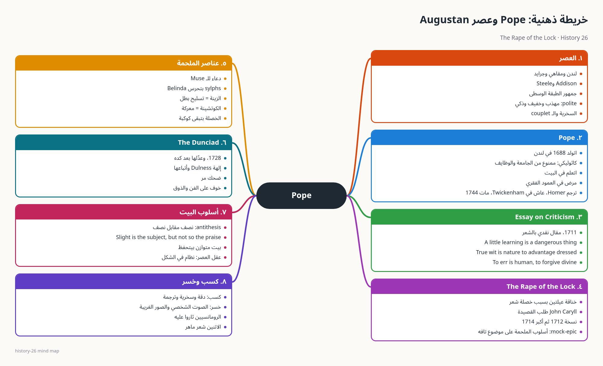

آداب الإنجليزية
: قواعد وجرامر وشعر وأساطير
⭐
0
🔥
استمر!
☕
الدرس 26: Pope وعصر أوجستس: إزاي قصيدة عن خصلة شعر بقت أعظم سخرية في اللغة الإنجليزية
📊
تمهيدي
الدرس 26
📜
تاريخ الشعر
📄 حمّل PDF الدرس
📝 ملخص الدرس (عربي) PDF
📝 Lesson Summary (English) PDF
🧠 الخريطة الذهنية PDF
🧠 شوف الخريطة الذهنية للدرس

→
الدرس اللي قبله
كل دروس الكورس
الدرس اللي بعده
←